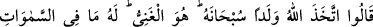
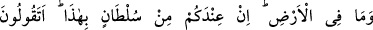
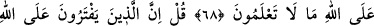
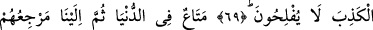
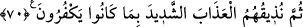
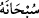
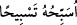
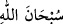
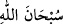

ALLAH HAKKINDA
YALAN UYDURANLAR
İFLAH OLMAZLAR
68. “Allah çocuk edindi.” dediler. Hâşâ! Allah bundan münezzehtir. O,
müstağnîdir. Göklerde ve yerde ne varsa hepsi O’nundur. Bu hususta hiçbir
deliliniz yok. Allah hakkında bilmediğiniz şeyi mi söylüyorsunuz?
69. De ki: “Allah hakkında yalan uyduranlar, iflah olmazlar.”
70. “Dünyada biraz geçinir, sonra bize dönerler. Sonra da biz inkarlarından dolayı
onlara şiddetli azabı tattırırız.”
Kâşifî’nin tefsirinde belirtildiği üzere Müdlicoğulları: “Allah çocuk edindi.”
dediler.” et-Tıbyân’da ise şöyle denilir: “Yahudiler: Uzeyr Allah’ın oğludur dediler.
Hristiyanlar: Mesih Allah’ın oğludur dediler. Kureyş kabilesi ise Melekler Allah’ın
kızlarıdır dediler.”
“Hâşâ! Allah bundan münezzehtir.” Bu söz, onların Allah Teâlâ’ya isnad ettikleri
çocuktan tenzih ve takdis eden, bu aptalca sözlerine bir hayret ifâde etmektedir.
(
) kelimesi tenzih için olduğunda takdiri, “
O’nu tesbih ve tenzih
ederim” şeklindedir. Bu kelime hayret/teaccüb de ifade eder. Çünkü bir şeye hayret
edildiği zaman “
” denir. Kelimenin birinci mânâda kullanılışı hakiki, ikinci
mânâda kullanılışı ise mecazidir. Eğer: “Bir lafzın aynı anda hem hakiki hem de mecazi
mânâda kullanılması mümkün değildir” diye bir itiraz gelirse derim ki: “Kelimenin
taaccüb mânâsının çıkarılması kelimenin o mânâda kullanılmasından değil kelimenin
ikincil mânâlarından elde edilmektedir. Nitekim Sa‘dî Çelebi’nin hâşiyesinde böyle
geçmektedir.
el-Ezkâr’da hayret verici her şey için “
” denildiği vârid olmuştur.
Bu lafzın taaccüp esnasında kullanılışının izahı şöyledir: İnsan, benzerlerinin sınırını
aşan, olmasını uzak gördüğü ve etkilendiği acaip bir durum müşahade ettiği zaman sanki